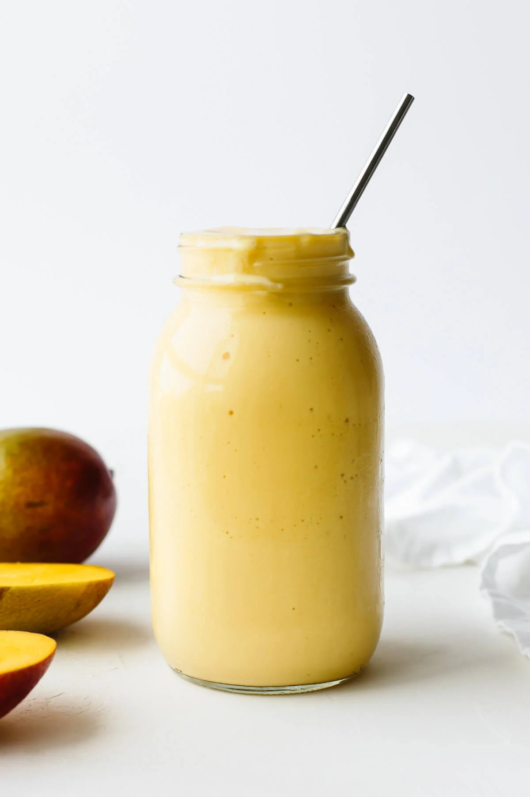

Mango Smoothie

Why Mango Smoothie?
There is almost no recipe easier than this mango smoothie. It just takes three minutes to make and it tates amazing!
You only need 5 Ingredients (But a blender would be useful):
Ingredients
- 2 fresh mangoes of 2 cups of frozen mango
- 1 small frozen banana (or half of a large banana), you can use unfrozen if using frozen mango
- 1/2 cup of milk (dairy or plant based)
- 1/2 cup of yogurt (dairy or plant based)
Steps
- Add all ingredients to a high-powered blender and blend until creamy.
- If it is to thick, add a little more milk.
- Taste and Enjoy!